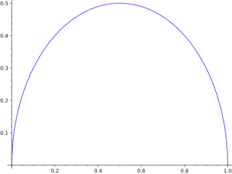
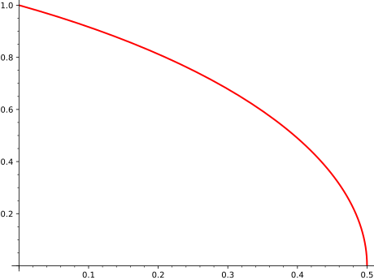
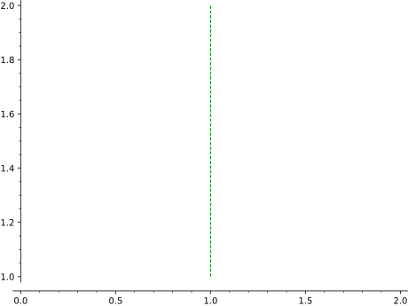
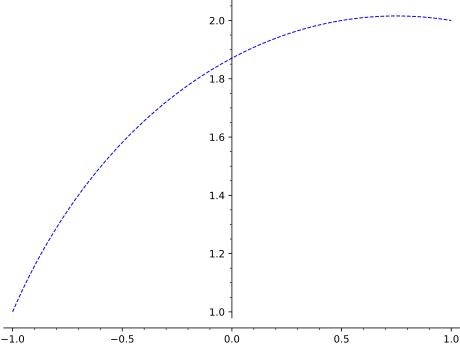
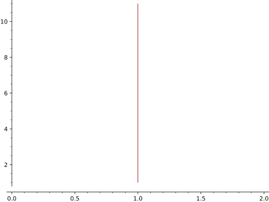

Three models of the hyperbolic plane are implemented:
Upper Half Plane, Poincaré Disk, and Klein Disk, each
with its different domain and metric tensor.
Upper half plane (UHP)
In this model, hyperbolic points are described by two coordinates, which
we will represent by a complex number in the domain
\[H = \{ z \in \CC \mid \Im(z)>0 \}\]
with the corresponding metric tensor
\[ds^2 = \frac{dzd\bar{z}}{\Im(z)^2}.\]
Poincaré disk (PD)
In this model, hyperbolic points are described by two coordinates, which we
will represent by a complex number within the unit circle, having therefore
the following domain
\[D = \{ z \in \CC \mid \lvert z \rvert < 1\}\]
with the corresponding metric tensor
\[ds^2 = 4 \frac{dzd\bar{z}}{(1-\lvert z \rvert^2)^2}.\]
Klein disk (KM)
In this model, the domain is again complex numbers within the unit circle as
in the Poincaré disk model, but the corresponding metric tensor is different:
\[ds^2 = \frac{dzd\bar{z}}{1-\lvert z \rvert^2}
+ \frac{(z \cdot dz)^2}{(1-\lvert z \rvert^2)^2}.\]
a,b - complex numbers connected by a hyperbolic arc
model – (default: 'UHP') hyperbolic model used,
which is one of the following:
'UHP' - upper half plane
'PD' - Poincaré disk
'KM' - Klein disk
'HM' - hyperboloid model
OPTIONS:
alpha – default: 1
thickness – default: 1
rgbcolor – default: 'blue'
linestyle – (default: 'solid') the style of the line, which
is one of 'dashed', 'dotted', 'solid', 'dashdot',
or '--', ':', '-', '-.', respectively
EXAMPLES:
Show a hyperbolic arc from \(0\) to \(1\):
sage: hyperbolic_arc(0,1)Graphics object consisting of 1 graphics primitive

Show a hyperbolic arc from \(1/2\) to \(i\) with a red thick line:
sage: hyperbolic_arc(0.5,I,color='red',thickness=2)Graphics object consisting of 1 graphics primitive

Show a hyperbolic arc from \(1+i\) to \(1+2i\) with dashed line:
sage: hyperbolic_arc(1+I,1+2*I,linestyle='dashed',color='green')Graphics object consisting of 1 graphics primitive

sage: hyperbolic_arc(-1+I,1+2*I,linestyle='--',color='orange')Graphics object consisting of 1 graphics primitive

Show a hyperbolic arc from a \(1+i\) to infinity:
sage: hyperbolic_arc(1+I,infinity,color='brown')Graphics object consisting of 1 graphics primitive

We can also plot hyperbolic arcs in other models.
We show a hyperbolic arc from \(i\) to \(-1\) in red, another hyperbolic arc
from \(e^{i\pi/3}\) to \(0.6 \cdot e^{i 3\pi/4}\) with dashed style in green,
and finally a hyperbolic arc from \(-0.5+0.5i\) to \(0.5-0.5i\) together
with the disk frontier in the Poincaré disk model:
We show the arcs defined by the same endpoints in the Klein disk
model (note that these are not the image of those arcs when
changing between the models):